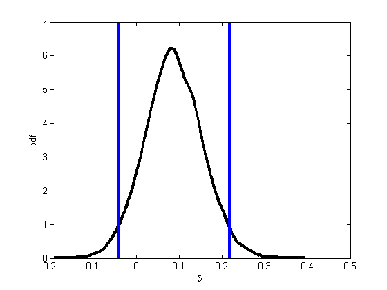
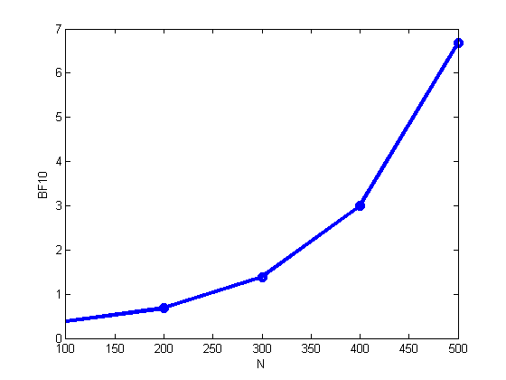

Contents
Analysis of binomial differences on lefthand/righthand data
requireStatsToolbox
setSeed(0);
y1 = 9; n1 = 52; y2 = 4; n2 = 48;
[deltas, post, thetas] = contingencyTableUnpairedDiffPostMc(n1,y1,n2,y2);
figure; plot(deltas, post, 'linewidth', 3, 'color', 'k');
xlabel('\delta'); ylabel('pdf')
diff = thetas(:,1)-thetas(:,2);
q = quantilePMTK(diff, [0.025 0.5 0.975]);
hold on
verticalLine(q(1), 'linewidth', 3);
verticalLine(q(3), 'linewidth', 3);
printPmtkFigure('unpairedTestHandednessDemo')

pgreaterMC = mean(thetas(:,1)>thetas(:,2));
numerical integration
pgreaterExact = dblquad(@(t1,t2) betaprob(t1, y1+1, n1-y1+1) .* ...
betaprob(t2, y2+1, n2-y2+1) .* (t1 > t2), ...
0, 1, 0, 1);
fprintf('prob(theta1 > theta2 | data): MC= %5.3f, exact=%5.3f\n', ...
pgreaterMC, pgreaterExact);
prob(theta1 > theta2 | data): MC= 0.908, exact=0.901
Effect of sample size
sfs = [1 2 3 4 5];
Nsf = length(sfs); BF10vsN = zeros(1,Nsf);
for i=1:Nsf
sf = sfs(i);
y1 = 9*sf; n1 = 52*sf; y2 = 4*sf; n2 = 48*sf;
N(i) = n1+n2;
alphas = [1 1];
logZ = betaln(alphas(1), alphas(2));
logZl = (nchoosekln(n1,y1) + nchoosekln(n2,y2));
logmarglik0 = logZl + betaln(alphas(1)+y1+y2, alphas(2)+(n1-y1)+(n2-y2)) -logZ;
logmarglik1 = logZl + betaln(alphas(1)+y1, alphas(2)+(n1-y1)) -logZ ...
+ betaln(alphas(1)+y2, alphas(2)+(n2-y2)) -logZ;
BF10vsN(i) = exp(logmarglik1 - logmarglik0);
end
if 1
figure; plot(N, BF10vsN, 'o-', 'linewidth', 3);
xlabel('N'); ylabel('BF10')
printPmtkFigure('BFhandedness')
end

Effect of alternative prior
y1 = 9; n1 = 52; y2 = 4; n2 = 48;
alphas = [1 1];
logZ = betaln(alphas(1), alphas(2));
logZl = log(nchoosek(n1,y1) * nchoosek(n2,y2));
logmarglik0 = logZl + betaln(alphas(1)+y1+y2, alphas(2)+(n1-y1)+(n2-y2)) -logZ;
logmarglik1 = logZl + betaln(alphas(1)+y1, alphas(2)+(n1-y1)) -logZ ...
+ betaln(alphas(1)+y2, alphas(2)+(n2-y2)) -logZ;
post = exp(normalizeLogspace([logmarglik0 logmarglik1]))
BF10 = exp(logmarglik1 - logmarglik0)
post =
0.7213 0.2787
BF10 =
0.3863
Sanity check
logmarglik1int = log(dblquad(@(t1,t2) binomprob(y1, t1, n1) .* ...
binomprob(y2, t2, n2) ./ beta(1,1), 0, 1, 0, 1));
assert(approxeq(logmarglik1, logmarglik1int))
Now do a one-sided test
logmarglik1 = log(dblquad(@(t1,t2) binomprob(y1, t1, n1) .* ...
binomprob(y2, t2, n2) .* (t1(:) > t2(:)) ./ beta(1,1), 0, 1, 0, 1) );
post = exp(normalizeLogspace([logmarglik0 logmarglik1]))
BF10 = exp(logmarglik1 - logmarglik0)
post =
0.7432 0.2568
BF10 =
0.3454